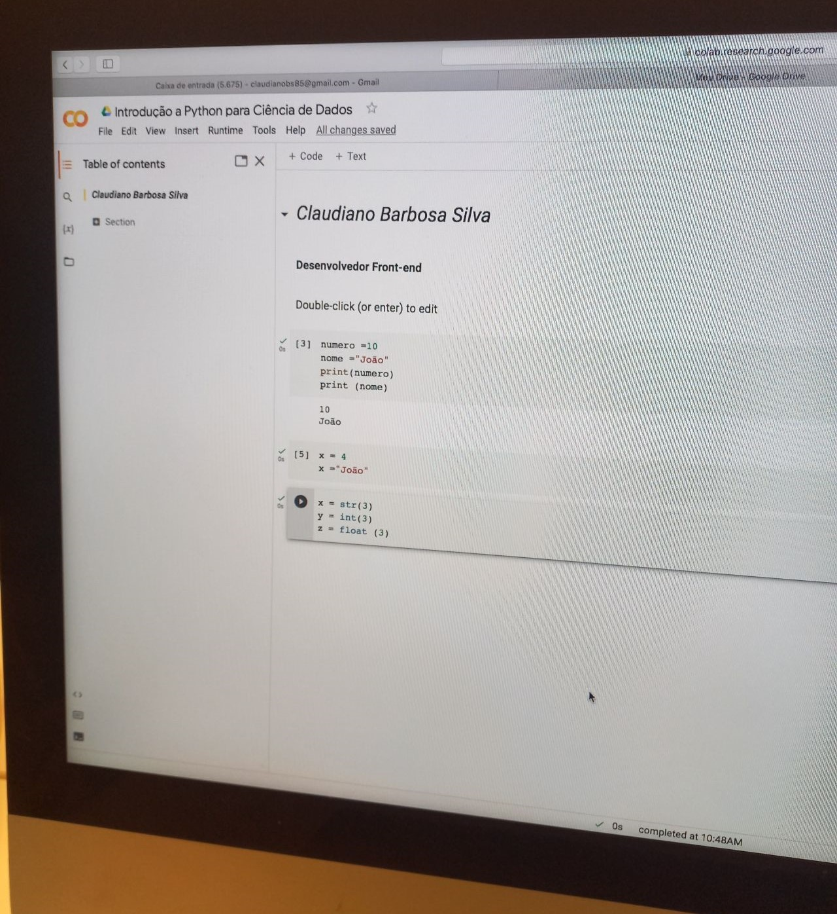

Minhas Habilidades
Html
Css
Javaschipt

Local : Porto Digital (Armazém da Criatividade - Caruaru)
Curso : Introdução a Ciência de Dados com Phyton
Aula prática
Local : Porto Digital (Armazém da Criatividade - Caruaru)
Curso : Introdução a Ciência de Dados com Phyton
Aula prática